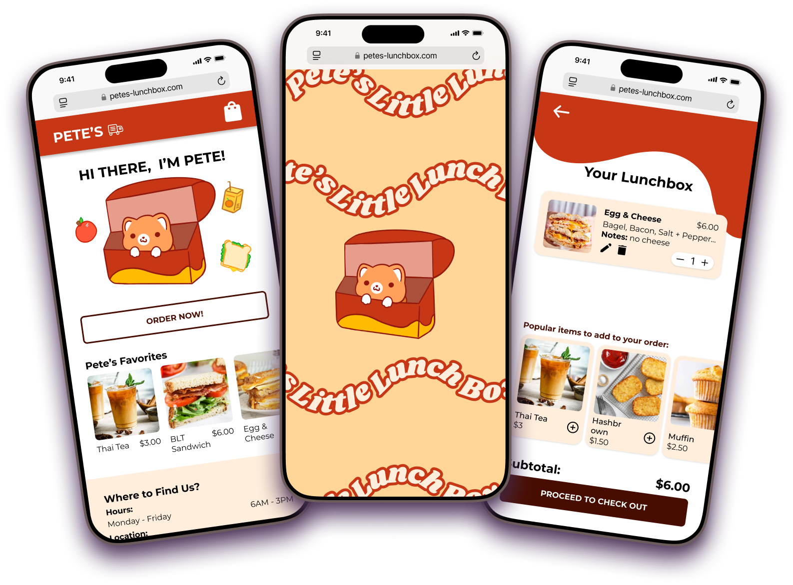
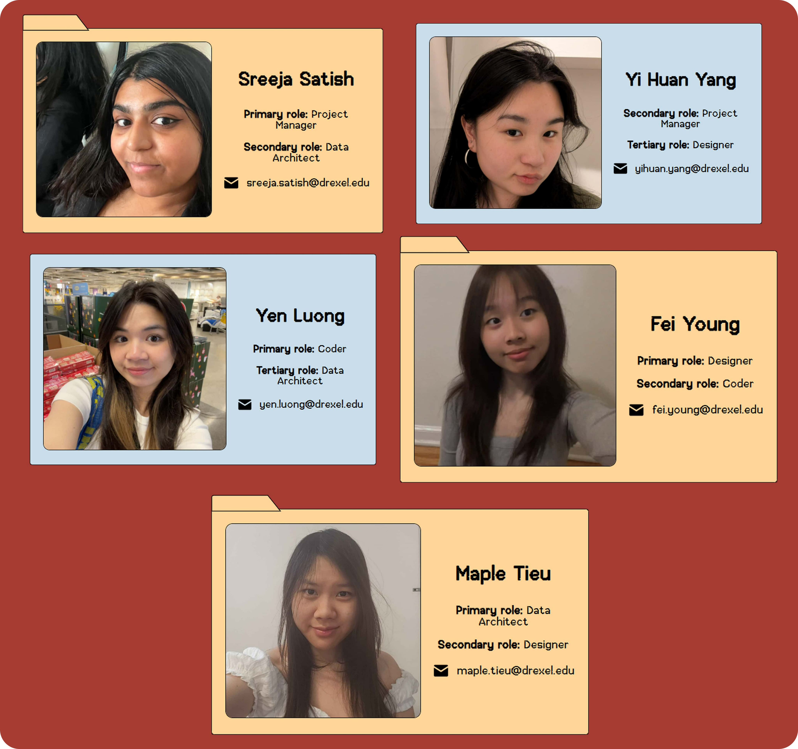
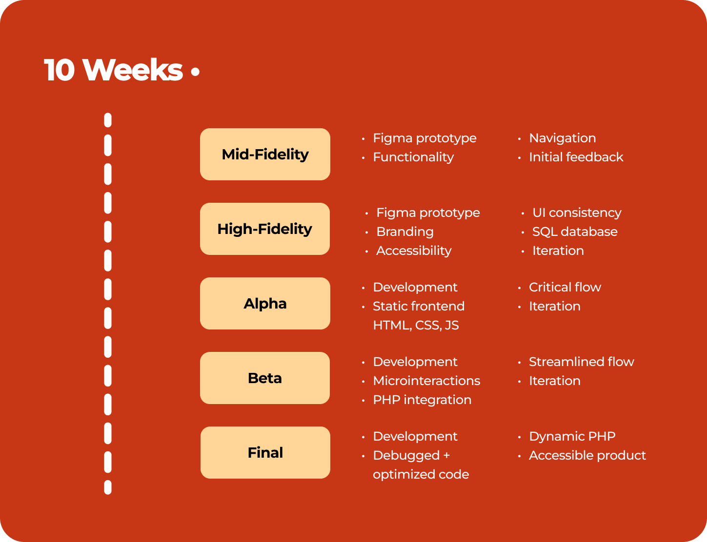
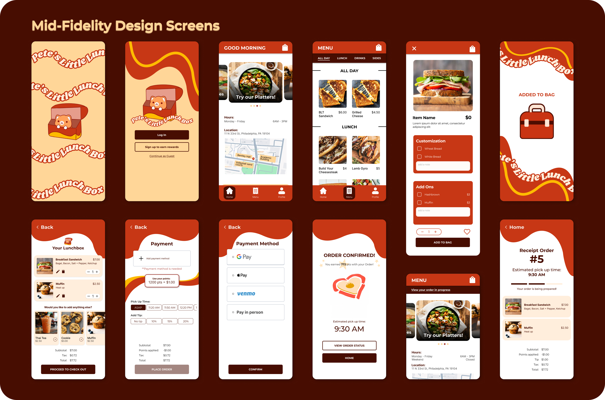
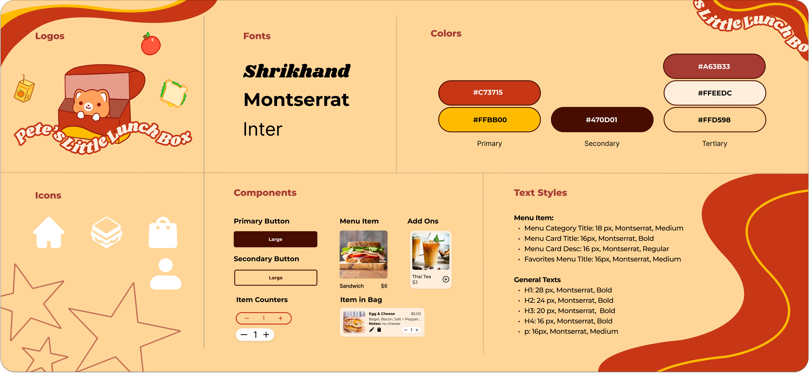
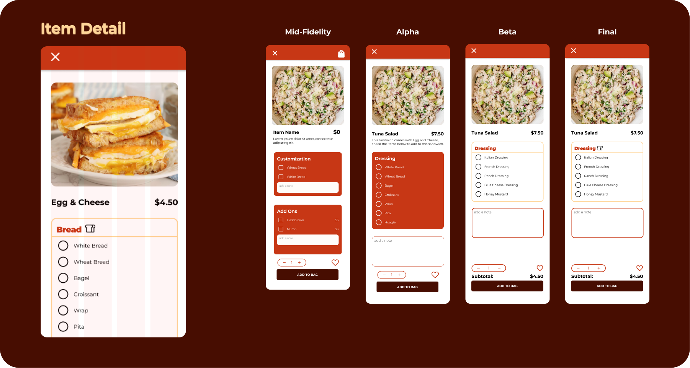
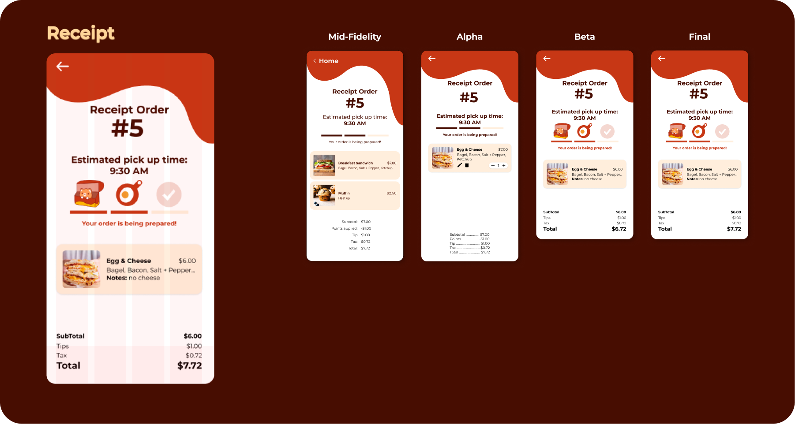
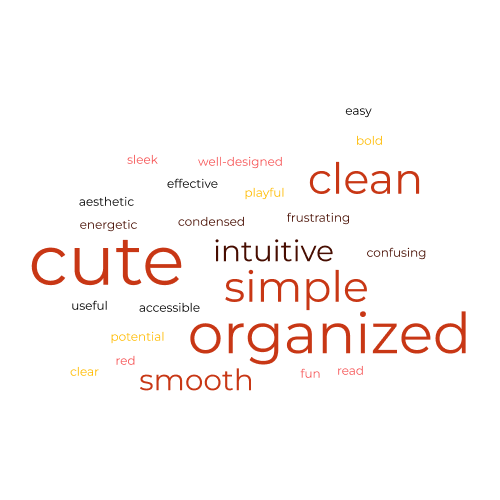

Pete's Little Lunch box, a food truck on Drexel’s campus, will greatly benefit from an app that highlights its menu offerings and improves the connection between the customer and food.
Over the course of my 10 week User Experience class, I worked to design and develop a mobile ordering app for a local restaurant/food truck around the Drexel University campus. In the former stage of this project, we identified a target audience and conducted research to identify a core problem our target audience was experiencing, then designed a solution and got feedback to improve and create a final solution that is backed by research, user-testing, and iteration.
Our goal for this phase of the project is now to enter the final stages of research and iteration to ensure an intuitive and user-friendly experience before developing the final product.
Project Manager, Data Architect, Designer
10 Week Project
January 2025 - March 2025
Figma, Figjam, Microsoft Teams, Adobe Illustrator, HTML5, CSS3, JavaScript, PHP, MySQL
Functional app displaying critical guest flow and ordering system with dynamic menu items
We designed and developed a mobile ordering app for a local restaurant/food truck around the Drexel University campus. In the former stage of this project, we identified a target audience and conducted research to identify a core problem our target audience was experiencing, then designed a solution and got feedback to improve and create a final solution that is backed by research, user-testing, and iteration.
Our goal for this phase of the project is now to enter the final stages of research and iteration to ensure an intuitive and user-friendly experience before developing the final product.
Pete’s Little Lunch Box is a breakfast and lunch food truck located on 33rd and Arch Street. Pete’s serves a variety of breakfast and lunch items to Drexel students and surrounding local workers.
Before starting this project, some of our team members were familiar with Pete’s and the positive reputation they had with the local area, as well as their lack of advertisement and branding. It was a perfect blank slate to design and develop a take-out app that reflected the comfort and practicality of the quick, on-the-go service.

I was the primary project manager and data architect for this project. I was responsible for managing the team, ensuring that everyone was on track with their tasks, and that the project was progressing smoothly according to the project timeline. I also worked on the data architecture, ensuring that the data was organized and accessible to the rest of the team.
Our team utilized Microsoft Teams as our project management system, utilizing its file organization capabilities and kanban board to create tasks and keep everything on track. I was able to set the structure of our project and materials, by improving the data architecture and making sure all of our project material was accounted for. We compiled user testing recordings, development links, and UX research materials into folders, along with images, assets, and other important documents like weekly meeting notes.
I also filled in the roles of designer and frontend developer, creating the user interface and user experience for the app and procuring research and feedback from users. I conducted over 10 user interviews and usability tests to gather feedback and improve the app through user-centered design adjustments. I worked with my team to create high fidelity prototypes, utilizing components and variables to ensure consistency and ease of use. Though I did not have the role of developer, I worked closely with Fei and Yen to ensure that the app was functional and user-friendly, supporting development decisions and providing feedback on the user experience.
Throughout this project, I worked to ensure that our team was supported and that the project was successful.
In a previous course, we were tasked to design a functioning Figma prototype for a food truck app. We took this project further by refining the design and developing a functional and dynamic app through repetitive user research and testing.
Though Pete’s menu initially appeared extensive, it was actually quite small—the illusion of length came from the many customization options displayed at a glance. This presented a unique challenge, as we needed to streamline the menu in a way that maintained its variety without overwhelming users.
Additionally, the business lacked a social media presence or branding beyond the truck itself, which featured a red, white, and black color scheme. This gave us creative freedom but also solidified red as the dominant color in our design. Red proved to be both a challenge and an asset—its bold presence made a strong visual impact, yet required thoughtful application to avoid overwhelming the branding. In the end, it became a defining element of Pete’s identity, striking a balance between vibrancy and usability.
Our goals for this project included:
We aimed for at least 90% positive feedback from our users from the first user testing phase to the last.
Our project spanned 10 weeks, and was broken up into 5 phases We utilized a Figma prototype for the first half of the project, and then utilized our HTML, CSS, JavaScript, and PHP prototype for the later phases.
Mid-Fidelity: Starting with a functional Figma prototype
High-Fidelity: Rethinking branding and emphasizing consistent UI
Alpha: Starting a static front-end prototype
Beta: Integrating microinteractions and finalizing flows
Final: Finalizing the interface with dynamic PHP

This project was the second part of our UX project, centered around creating a fully developed app. We started with the previous Figma prototype, surveying the prototype and refining its structure and design. We implemented changes with the functionality, simplifying the critical path and removing clutter.
We wanted this app to reflect a stronger personal brand, so we reworked key design decisions.

In our High-Fidelity stage, we sought to refine our Figma prototypes to be pixel perfect in order to reduce friction in the transition between design and development. By streamlining our design system and utilizing Auto Layout and Figma components and variables, we were able to ensure a cohesive handoff process.

This stage was the start of our final deliverable; a fully functional web app. In this stage, we created an HTML and CSS app framework, translating each Figma screen into a static page.
This I assisted with the development process by refining microinteractions and ensuring that all buttons and pages had fuctionality. This is also where we started integrating PHP, finalizing the MySQL database and getting ready to have a fully functional product. This is also where we had our last round of user testing. Based on our user testing, we adjusted the "Added to Bag" animation, giving the users more freedom to choose their next step.
We made it to the finish line! In this stage, we had a finalized design, and worked to make sure everything was good on the development side. We incorporated all the PHP to make the pages dynamic. With this we were able to collect guest IDs and collect the individual orders of guests with updating prices and dynamic ordering times and tips.
Though our prototype is mobile responsive, please go into "inspect" mode on your desktop device and set the prototype to an iPhone XR size to get the same experience as our user testers!
This is a display of our most prominent screen progressions throughout this project. The Home, Item Detail, and Reciept Screens changed the most throughout this project, changing visually based on feedback from our user testing sessions.

The home screen started out with a carousel, evolving to a picture of the food truck in the Alpha stage. Based on feedback to showcase more branding and show Pete's personality, we added our mascot Pete, and streamlined the directions to visit the food truck. Overall, the home screen grew to reflect a more cohesive app and sought to inform users as much as possible.

The item detail page started as a multi-screen customization process, but we simplified it into a a single screen with radio buttons and check boxes. Through our user testing, we decided to simplify the flow by separating the ingredient categories and adding a single note field at the end of the page. We also displayed the subtotal of the item, which would increase or decrease based on the number of items added or removed.

Our reciept screen evolved to showcase imprtant information in a straightforward way. We ccounted for the busy schedules of our users who would need efficient ways to show their order to the food truck and pick up their food. By streamlining the hierarchy of pricing, we were able to increase the visibility of the subtotal and total. We also restructured the progress bar, seeking to inform our users on the stages of the pick up process and aiming to reduce overall frustration.
This experience was a refreshing taste of working in a crossfunctional team for a real world project.
Throughout our user research interview sessions, we asked a consistent question to our users: How would you describe this app in 3 words? Here is a reflection of all the feedback we gathered throughout our tests. The largest words were repeated multiple times, which reflects how our app has gained its presence as a solid food truck app. A few critical words are featured from earlier rounds of testing, but they played their role in emphasiszing certain design or development critiques. We were able to alleviate frustrations at later stages of our app, and overall, we created a really thoughtful app.
